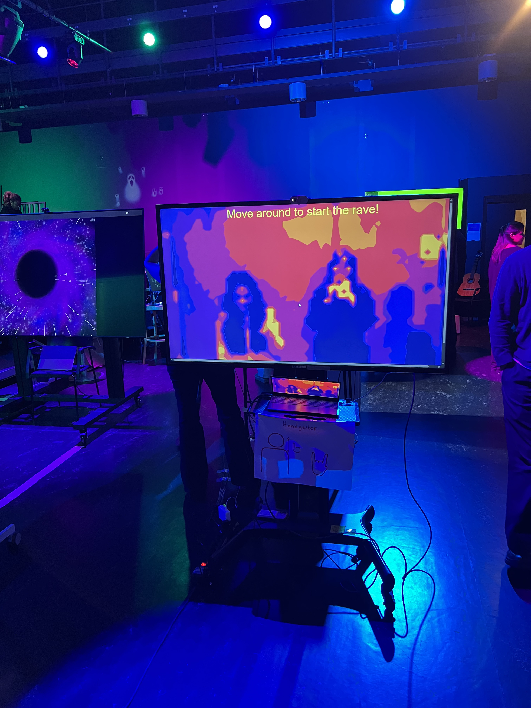
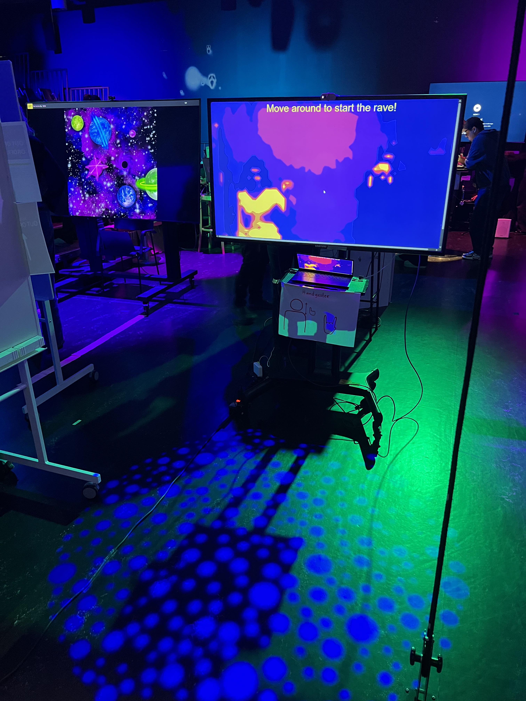
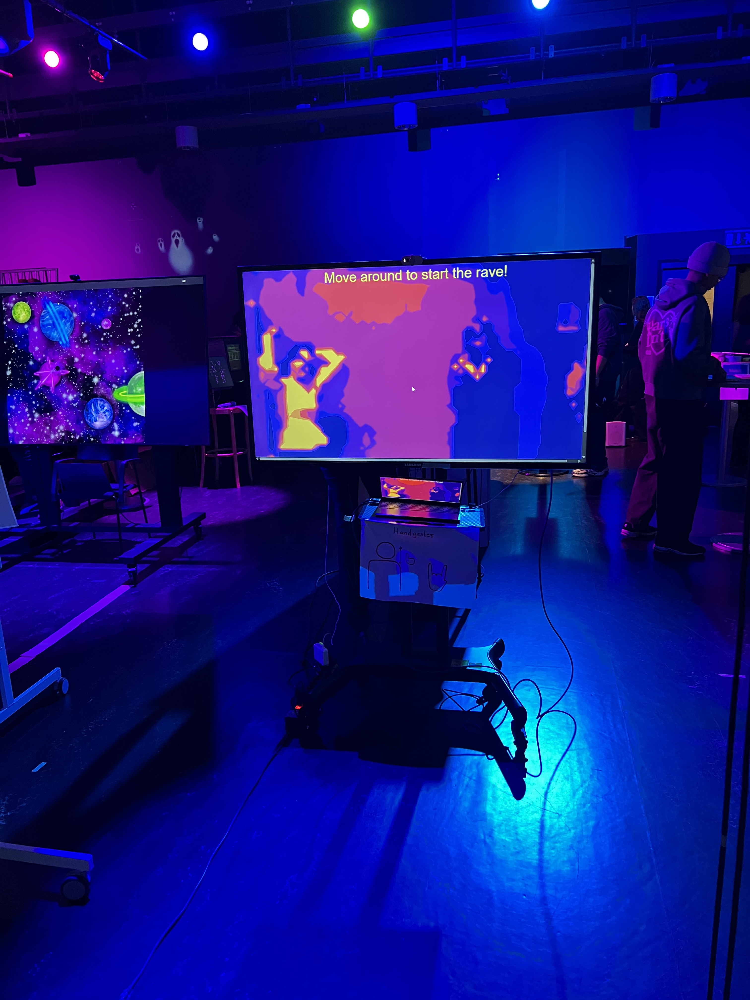
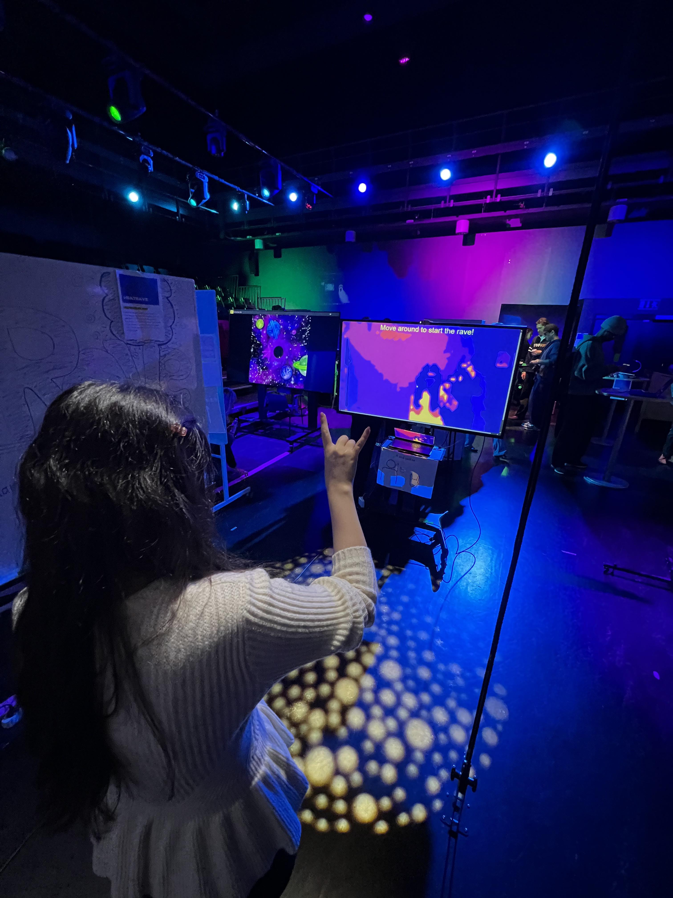
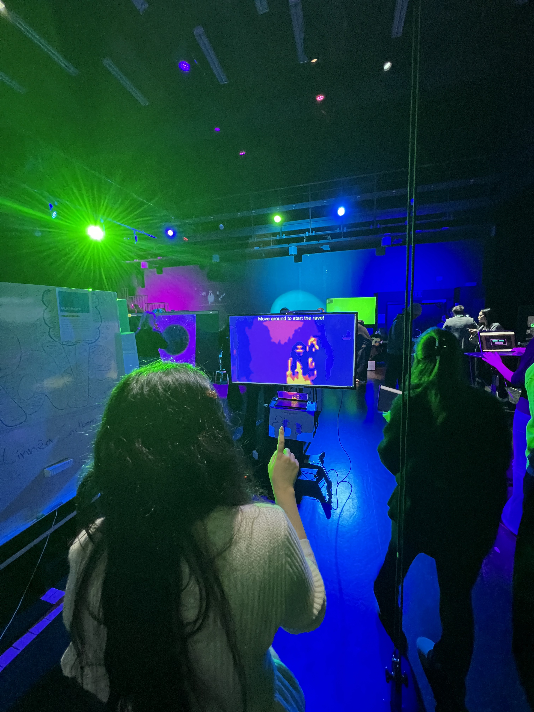

The zones
The image that the webcam picks up is devided into four zones where each zone have different sounds.
Student in Stockholm, studying the bachelor's programme IT, media and design
Heatrave is an interactive installation where the audience creates their own rave. Stand in front of a webcam and your image appears on a TV, filtered to look like a traditional thermal camera. As you move around and use hand gestures, you step into different zones where the music and lighting change. Everything responds to you in real time, so no two raves are the same.

The image that the webcam picks up is devided into four zones where each zone have different sounds.

We used body and hand tracking so that the sound can change depeding which zone the audience is standing in. Four people can be in frame at the same time and the empty zones sound stays off.

We connected our code to the lights in the venue so we could decide color, brightness and placement.

By pointing your pinky and index finger the lights change from the blue light to spots that change color.

By pointing your finger beside you and drag it slowly up and down between your eyes and shoulder you can turn the volume of the music up and down.